Proposal 01 · Heritage × Mystery
CASTELL DE
MONTJUÏC
THE SECRET SOCIETY
HAS A HOME.
Why this place
HISTORY ON THE OUTSIDE.
THE FUTURE WITHIN.
Si THE METHOD lleva décadas operando en secreto, necesitábamos una sede a su altura.
El Castell de Montjuïc convierte la llegada en parte de la experiencia. Su posición estratégica, su arquitectura y su historia construyen de forma natural esa sensación de estar accediendo a un lugar reservado.
Desde lo alto, Barcelona se extiende a nuestros pies como un gran lienzo sobre el que imaginar, diseñar y gestionar lo que viene después.
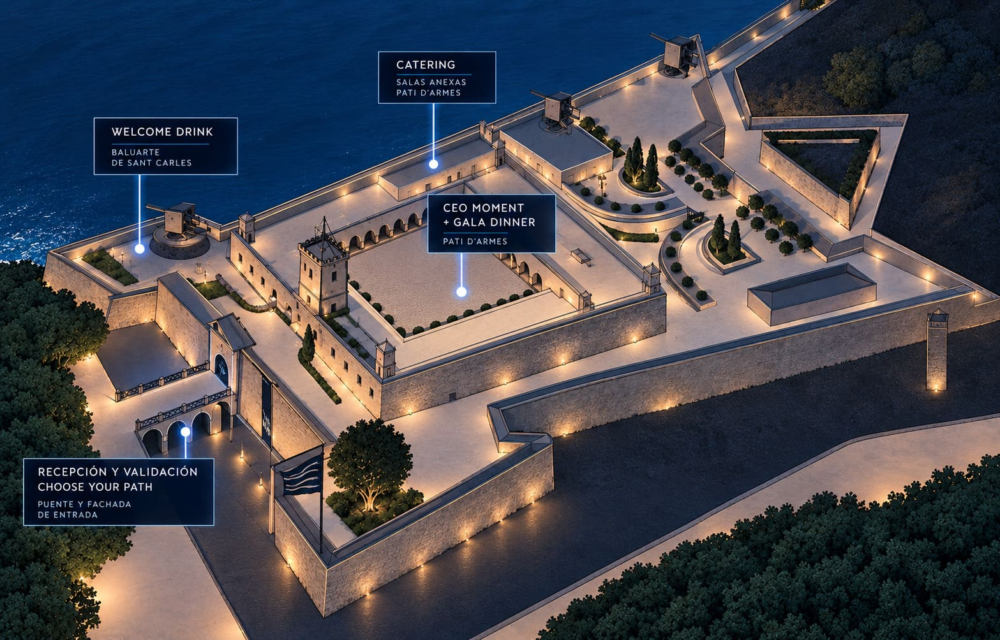
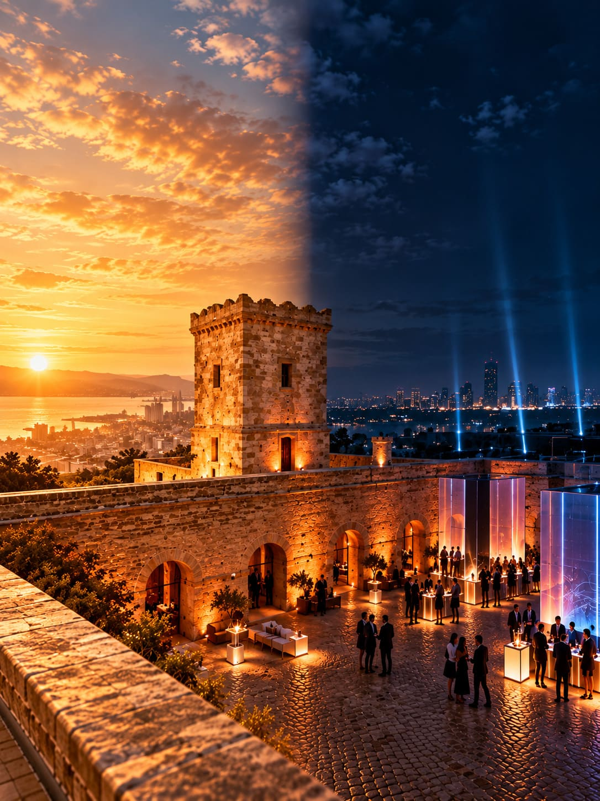
Concepto
TWO WORLDS.
ONE EXPERIENCE.
En el Castell, THE METHOD nace del contraste. Conservamos la fuerza de la arquitectura histórica y hacemos que la tecnología aparezca progresivamente.
Luz, sonido, señalética, contenido y recursos audiovisuales acompañan al invitado hasta descubrir el corazón contemporáneo de la organización.
No transformamos el Castell para ocultarlo. Utilizamos su historia para hacer todavía más sorprendente lo que sucede dentro.
Arrival
YOU'VE ARRIVED.
OR HAVE YOU?
THE METHOD comienza antes de llegar al Castell. Desde diferentes puntos de Barcelona, los miembros pueden acceder a los shuttles identificándose mediante una palabra secreta.
Tras abandonar el ritmo del MWC, los invitados ascienden hacia Montjuïc. El Castell aparece como una localización reconocible pero, esta noche, algo es diferente.
Queremos mantener el exterior contenido y misterioso. Sin revelar todavía THE METHOD.
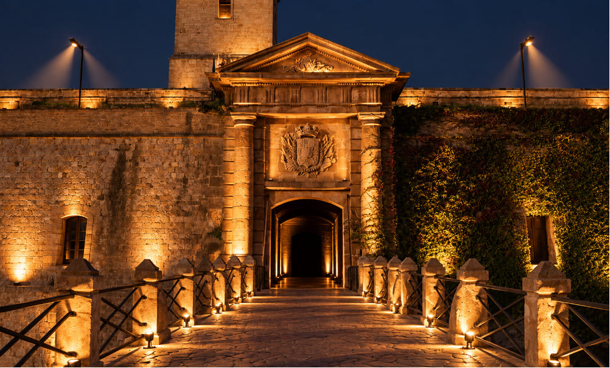
Access
MEMBERS ONLY.
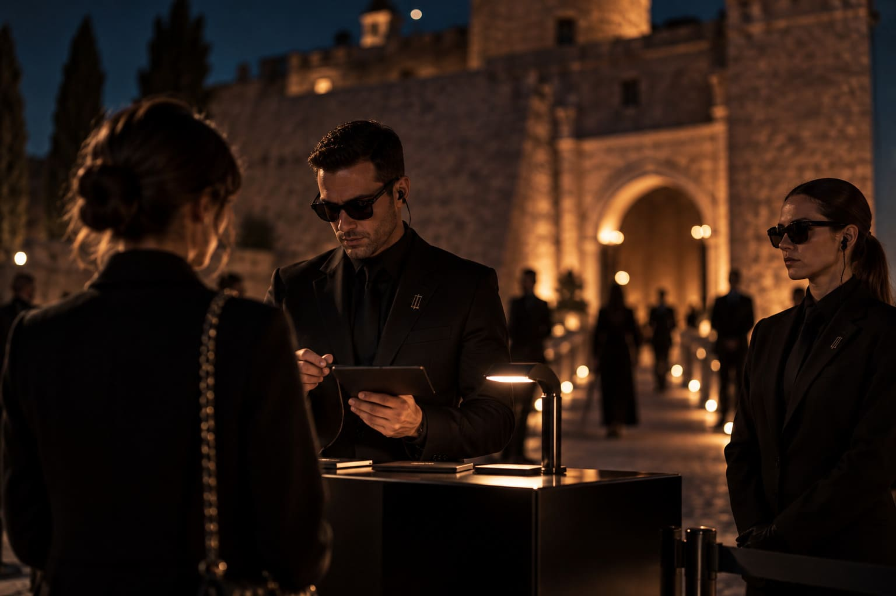
Entrar en THE METHOD no puede sentirse como entrar en un evento cualquiera.
Un equipo de falsos agentes de seguridad recibe a los miembros. Nombre y palabra secreta funcionan como código de acceso antes de permitirles atravesar las puertas del Castell.
Una vez dentro, comienza el verdadero camino hacia THE METHOD.
Choose your path
TWO PATHS.
ONE DESTINATION.
Para llegar al corazón de THE METHOD, los miembros deberán atravesar la fortaleza y dejarse guiar por sus sentidos.
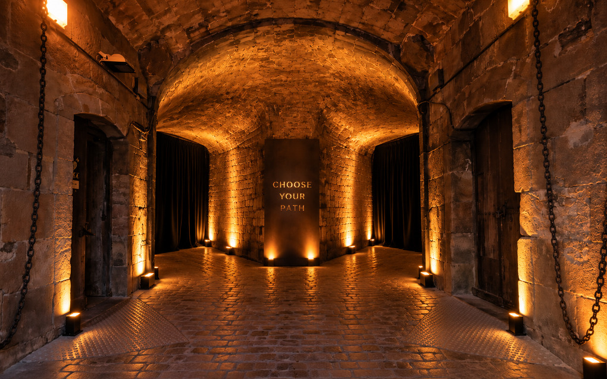
PATH A · FOLLOW THE LIGHT
Una línea de luz marca el camino. Pulsos, color y movimiento acompañan al invitado mientras atraviesa los pasadizos del Castell.
PATH B · FOLLOW THE SOUND
El camino no se ve: se escucha. Pulsos, frecuencias, voces y mensajes fragmentados conducen al invitado hacia su destino.
Welcome drink · Baluart de Sant Carles
WELCOME TO
THE METHOD SOCIETY.
Los dos recorridos vuelven a encontrarse.
El baluarte se convierte en el primer gran momento compartido de THE METHOD: vistas sobre Barcelona, música y networking.
Las barras y estaciones distribuidas, mobiliario alto y bajo e iluminación cálida construyen un ambiente relajado pero sofisticado.
Los miembros podrán descubrir algunos espacios del Castell mediante visitas guiadas en grupos reducidos, integrando la historia del venue como una capa más de la experiencia.
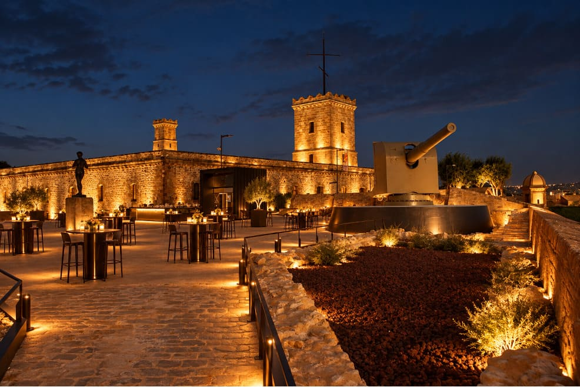
UAY MOMENT · Pati d'Armes
WELCOME TO THE
HEART OF THE METHOD.
De repente, las puertas se abren. La música cambia. Una línea de luz conduce la mirada hacia el interior y una voz da la bienvenida a los miembros de THE METHOD.
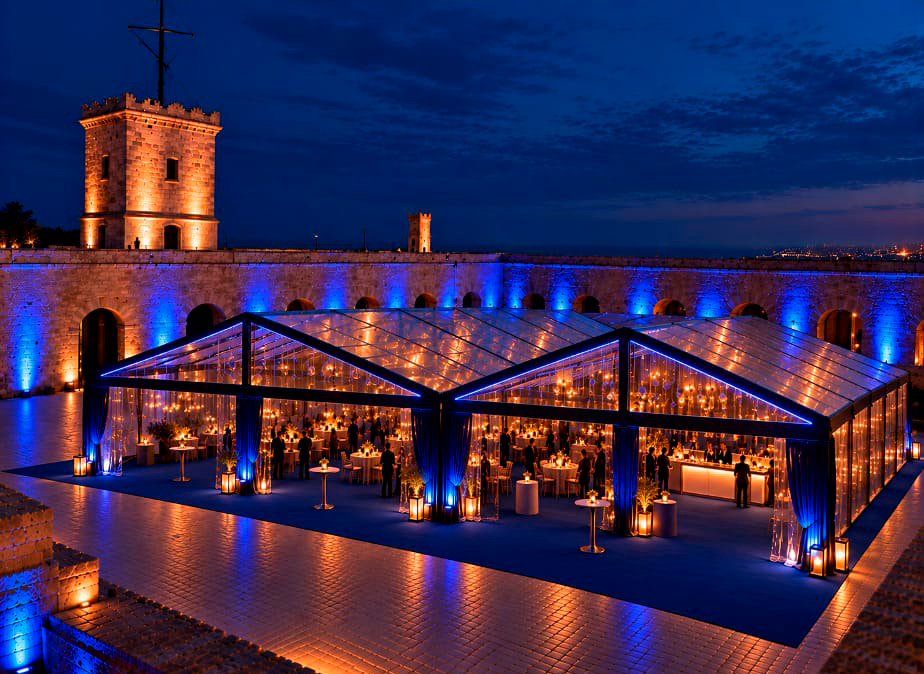
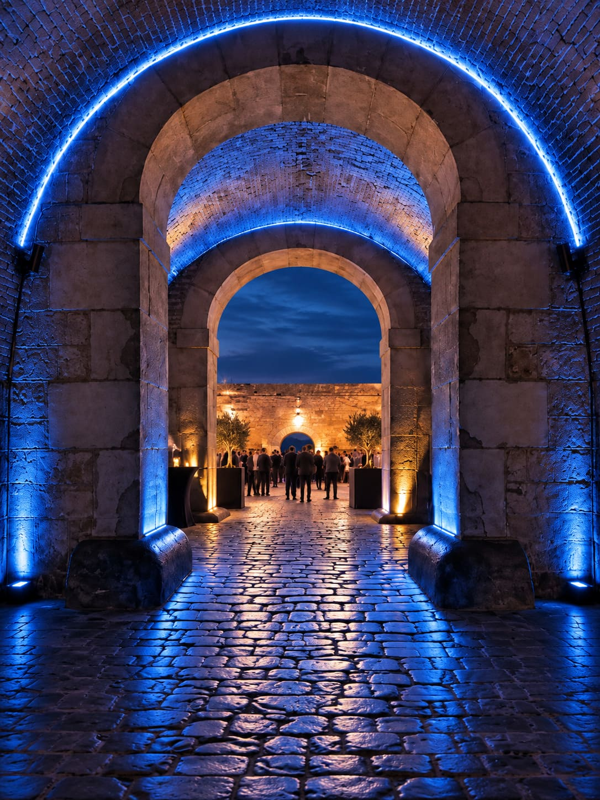
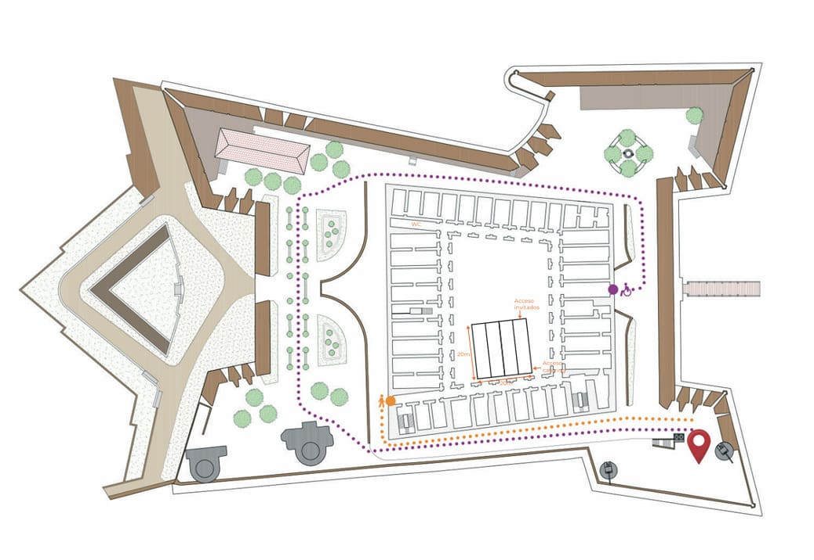
CEO moment
THE MEMBERS
HAVE BEEN CALLED.
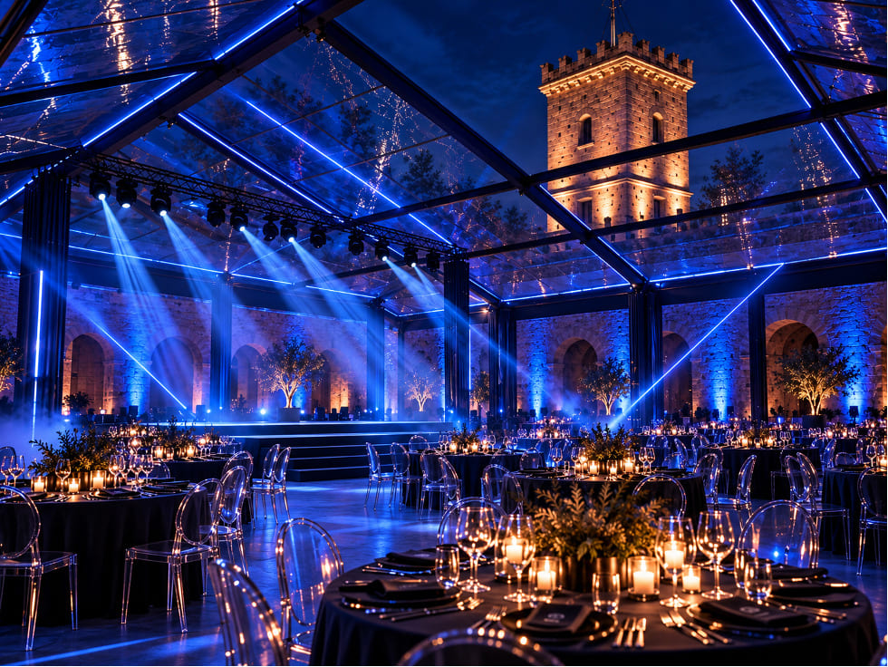
Todos los miembros están reunidos. Es el momento de darles oficialmente la bienvenida a THE METHOD SOCIETY.
Una intervención breve y potente del CEO da contexto a la noche y conecta THE METHOD con la visión de NTT DATA.
No queremos convertir el momento en una plenaria. Una tarima lateral, iluminación dedicada y contenido audiovisual integrado mantienen la intervención dentro de la experiencia.
Gala dinner
FIND YOUR PLACE
IN THE SOCIETY.
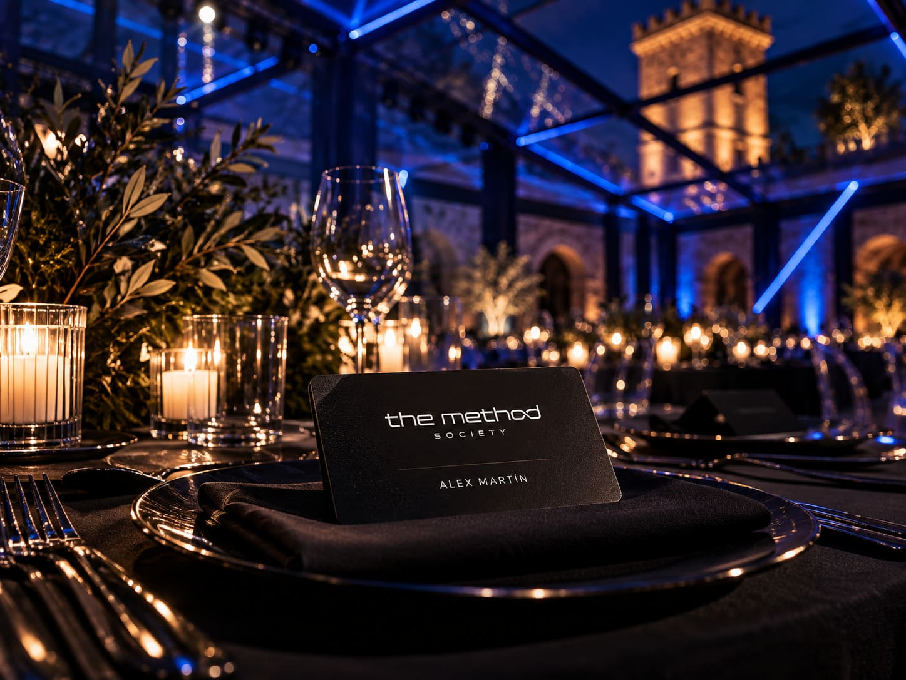
La noche culmina con todos los miembros reunidos alrededor de la mesa.
Cada invitado encontrará su lugar identificado mediante su carnet de miembro de THE METHOD SOCIETY, convertido ahora en su place card personal.
Una última forma de reforzar la pertenencia: cada miembro encuentra literalmente su lugar dentro de la sociedad.
The details
MEMBERSHIP
IN EVERY DETAIL.
El código de THE METHOD continúa en la mesa, el sitting, los materiales y cada pequeño punto de contacto.
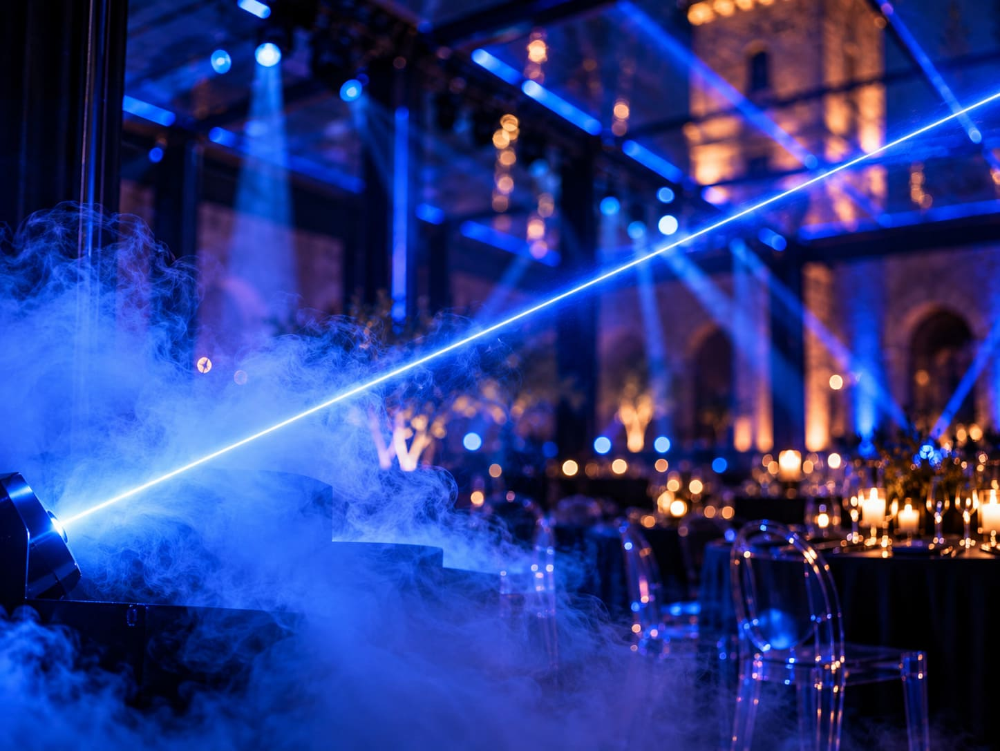
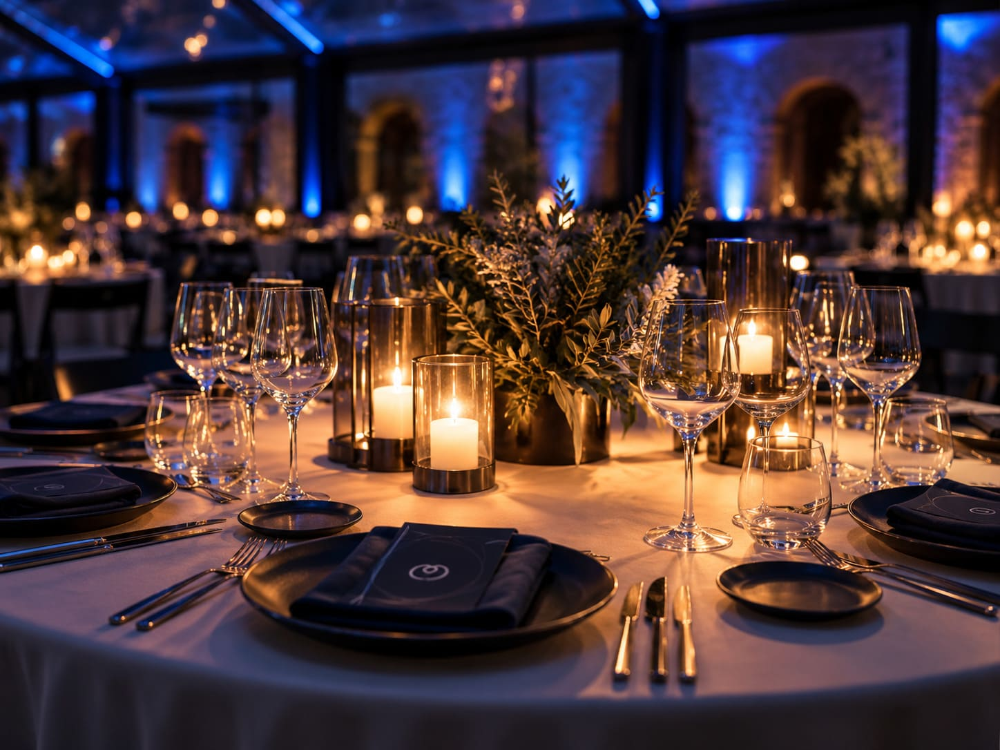
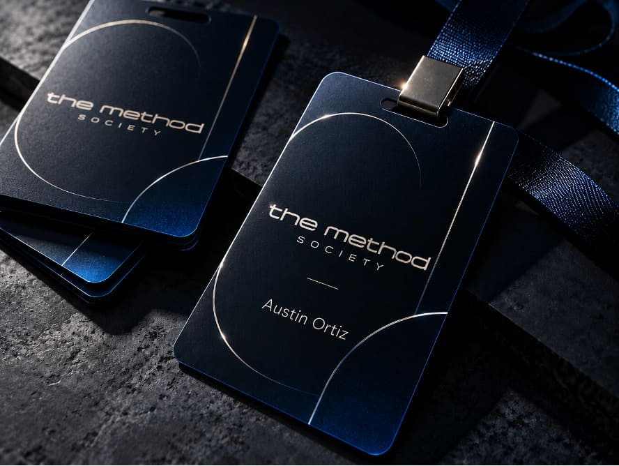